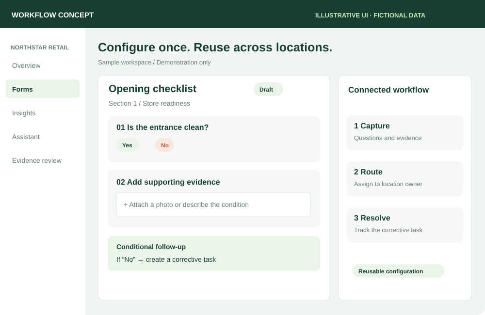

A reusable platform.
Many operating needs.
Opportunity discovery · Platform strategy · Customer expansion
Read the product decisions ↓
Problem, decisions and delivery
The opportunity
Customers were adapting existing tools to capture recurring frontline information. I identified the need for Forms and designed the original product, owning discovery, UX, validation and launch.
The product decision
Build a configurable foundation rather than a separate module for every workflow. Forms evolved to support checklists, multi-stage handovers, expenses, permits and audits, with conditional questions, response-triggered tasks and integrations.
What changed
Customers replaced manual checklists and, in some cases, specialist tools. Forms became a primary entry point for approximately 50 customers and supported expansion into other KNOW modules. I continued to own its product development beyond the first release.